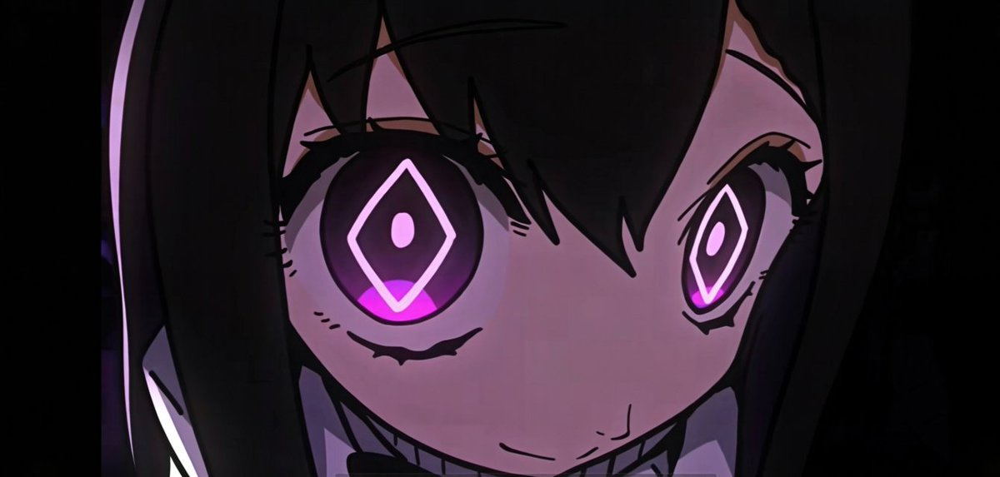

“很开心吧很开心吧和泰拉的小动物一起玩很开心吧为什么不告诉我为什么不来找我为什么从来不来看我你明知道我不喜欢你和别人呆在一起你为什么要这么做你知道我希望我是你最亲近的人唯一亲近的人而不希望自己不是你最亲近的那个人你当时是怎么跟我说的明明说好要一辈子爱我要积累一瞬间一瞬间无数个一瞬间最后就成为一辈子你就是这么积累的我很讨厌博士在我不知道的地方露出笑容哦我也很讨厌你和别人牵手啊你要牵只能牵我的手你明白吗你只能呆在我身边你明白吗我会一直注视你的这我早就跟你说过了吧但你当作没听见吗还是觉得在我的注视下和泰拉的小动物卿卿我我很有味道你喜欢这种情调吗会喜欢吗但是我不喜欢我会很生气你知道吗我一直在想博士你的事情我一直在单方面想你的事情你在和那些小动物一起的时候从来没想过我吧你把所有的责任全部丢给我让我来选择的时候你知道我有多生气吗明明只要说爱我就好了吧你知道我不会放弃的你知道我总是会这么做的但你在做什么不断的伤害我你只是把我当成你的工具吗你一点不在意我吗一点也不会吗完全不会我对你来说不重要吗只是工具吗不可以吧不可以这么做吧我现在就呆在收容房里哦你知道的吧她们不是会把所有的事情都告诉你吗你总是会这样花言巧语的骗取小动物的信任我早就知道的之前我就已经宰了四只小动物了但现在你又从哪里新找了三只出来你完全不会不好意思的吗你真是人渣中的人渣也只有我会这么死心塌地的跟着你你明白吗这个世界上只有我是真实存在的博士你在听吗你为什么完全不说话来我身边哦来我这边哦永远不要离开这片大地已经没救了就安安心心地等待灭亡不好吗和我一起见证这片大地的终焉是多么浪漫的一件事啊呐呐我很快就会来找你哦你会藏好吗还是继续像之前那样用你可怜的谎言继续欺骗我还是会躲在哪个小动物的床上去你和别人牵了手吧而且是你主动这么做的吧我说过那是不可以的吧别人的手是什么感觉的呢软软的香香的你总是在想那些事情吧对啊最明白你的就是我呢我是最理解你的阿米娅很可爱吧她的坚韧善良很吸引你吧毕竟是你缺少的部分呢但你会觉得她能弥补你缺失的部分那就大错特错了啊能够和你永远在一起的只有我啊一直到这片大地的尽头也是如此你只能牵我的手只能亲吻我只能和我长相厮守你明白吗我不想捅死你的但是你不爱我我也只能这么做了与其让你继续伤害我还不如让我来为你做选择呢你和小动物们说话的时候会笑吧为什么和我说话的时候就从来不笑呢是不开心吗和我在一起的时候有什么让你很不开心的事情吗你不是向我表白了吗你对自己的行为没有任何理解的吗还是说我对你的放纵有些过了火让你总无法确认到哪些是应该做的哪些是不应该做的吗我想知道你的理由哦我在听你的解释哦从刚才开始你就完全没说过话了吧为什么呢你觉得我在很遥远的地方吗你在找我吗你在害怕我吗如果你没有做任何对不起我的事情你为什么要感到害怕呢你的手机也让她们看过了吧我都还没看过那种东西哦我是很信任你的不会去管你在社交软件上面和谁聊天的哦但是她们不会呢她们不会照顾你这点呢你明白了吧只有我是对你最好的博士你现在在想什么呢我想听听你的看法哦你对我没有任何要解释的吗还是已经无话可说了呢是啊你就是这样的性格你会因此感到愧疚吗感到愧疚就对了啊因为我满脑子都是你你说过的那些话你说过的那些事但是你呢我在你的想法里只占了很少很少的部分对吧你那赌咒发誓又是在干什么你就这么不想被我纠缠一辈子你很讨厌我吗很仇恨我吗但我做的那些都是为你好啊我只是在为了你啊你什么时候才能明白我的付出明白我的心意呢我希望你喜欢上我哦不要再像过去那样把我抛下了我从来没怨恨过你哦因为我是最喜欢你最爱你想要和你永远在一起的啊你明白自己的定位了吗啊也是呢你毕竟还在这个年纪吧没关系哦你想来找我做什么都可以哦毕竟我们不管是形式上还是事实上都是完全的恋人呢我今天就会去找你哦你不要逃跑你要乖乖的等着我呢你在期盼着什么呢不论是什么都不要抱有期待哦其实我是能感觉到疼痛的只不过只会感觉到你对我的伤害你会因伤害我而感到愉悦吗那我也愿意你做到这点事啊你可以对我做任何事情的只要你只爱我就好了出轨是不可以的出轨是绝对不可以的你可以和她们出去玩啊毕竟她们也是你很好的朋友从当初就是这样了但是已经尝试了这么多遍了我还是做不到啊你可以跟她们出去玩哦但是也要带上我呢我会嫉妒你的所以你要对我特别好比她们都好这样我才会感到开心你明白吗我希望你有个解释啊你从刚才就一言不发呢我只有你啊我只剩下你了你不是很清楚这一点吗就是因为我喜欢你你才会有存在的理由啊你为什么要背叛我呢还是说你不想活了不想活了就不要逃跑不就好了吗我会一直照顾你的啊我会给你做饭的和你打情骂俏的和你一起玩你爱玩的那些的很多游戏都是两个人一起玩才好玩不是吗和喜欢的人一起玩喜欢的游戏不是快乐加倍吗多美好啊不是吗你为什么要毁了这一切呢我真不明白你到底想要得到什么拯救什么那真是无聊的感想啊不过我会一直陪着你的毕竟我是个好女人嘛毕竟我最爱你了嘛我为了你什么事情都可以做哦你要洁身自好呢稍微牵手我就原谅你了毕竟人类总是需要肢体接触的嘛我就很讨厌别人碰我除了你毕竟我只爱你嘛但是你如果有任何越界的举动任何更进一步的打算的话这场无聊的游戏就会到此为止哦你就会失去我的信任呢呐呐说了这么多你应该明白我的心意了吧你看着别人的时候要想着我你和别人在一起的时候也要想着我你要来看我你要珍惜我如果你看着别人我会很沮丧的哦不要妄图把和别人单独在一起的回忆覆盖掉和我在一起的回忆哦你的回忆要永远要有我在场呢我不在的时候你也要想象有我在呢毕竟我会一直一直看着你的啊我会一直想你的爱你的你很久没说过话了你在想什么呢你在忏悔吗博士...你还在听吗.……博士……博士"
#普瑞赛斯 #病娇 #明日方舟
#普瑞赛斯 #病娇 #明日方舟
